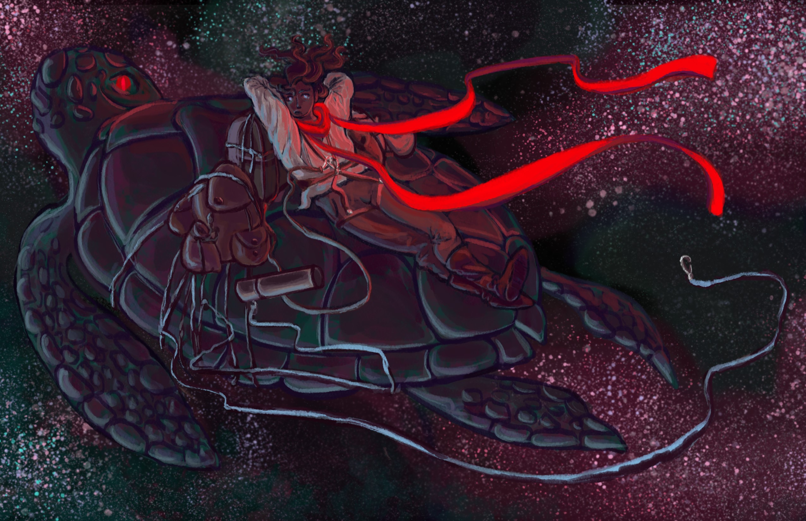
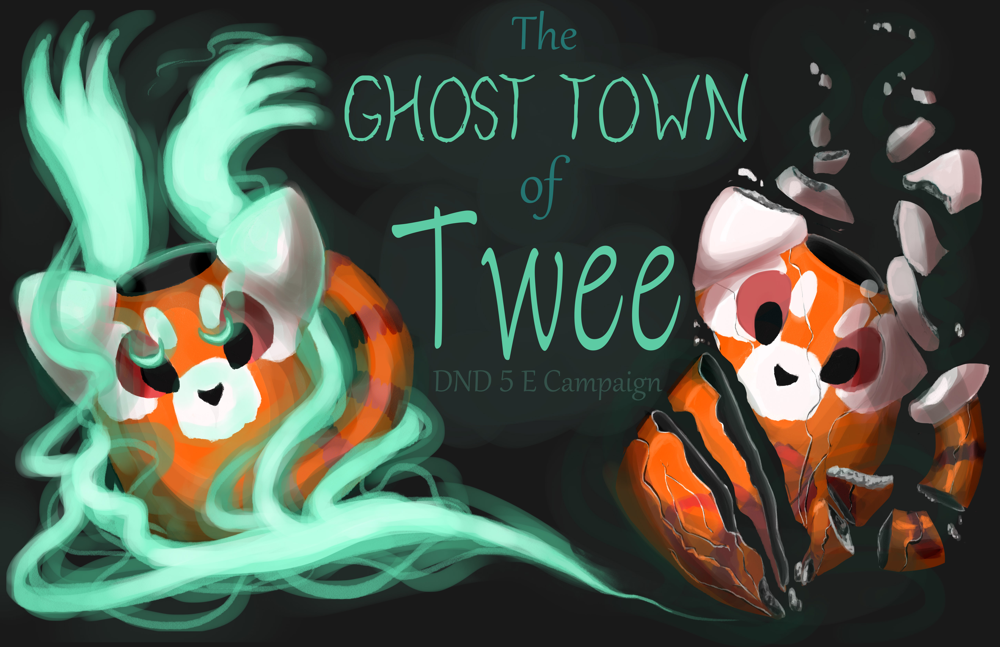
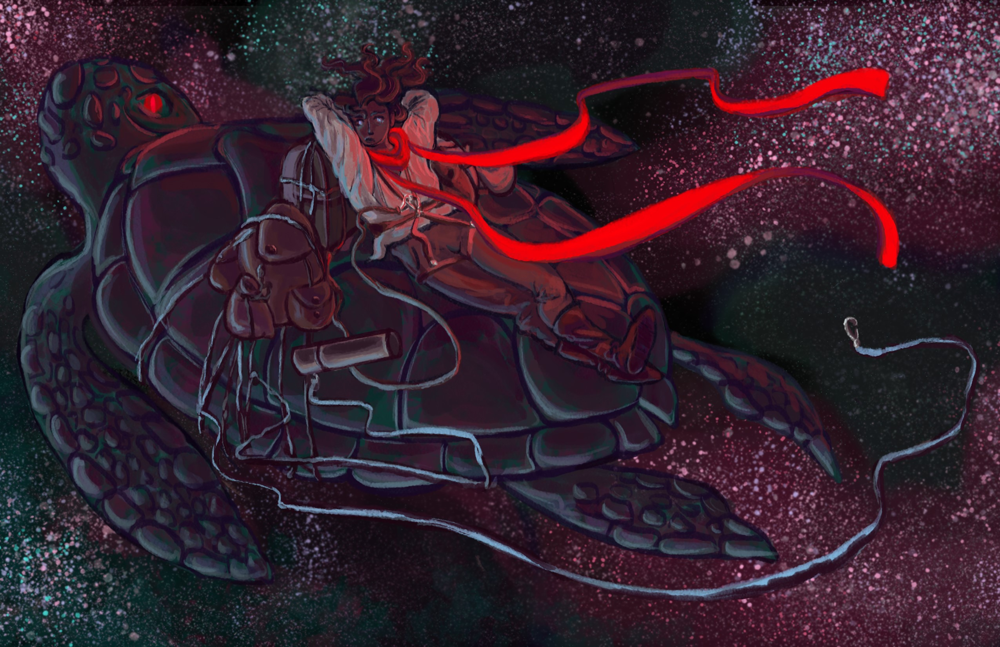
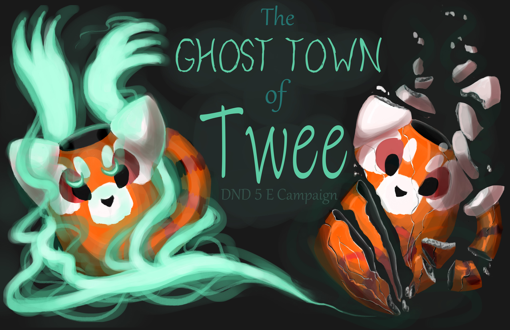
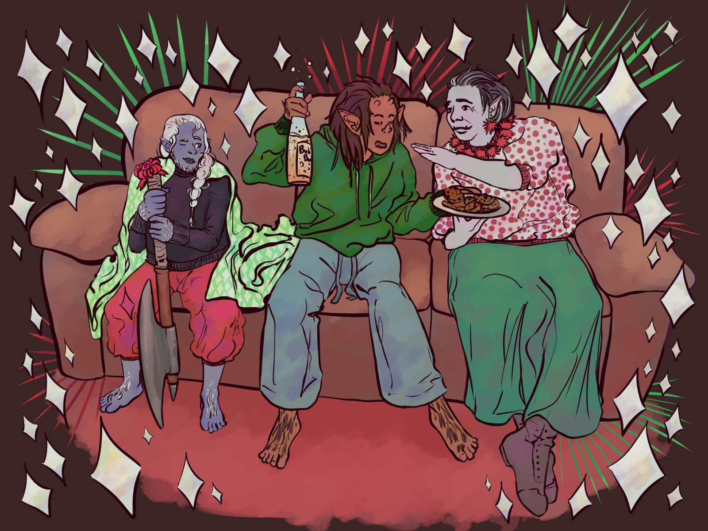
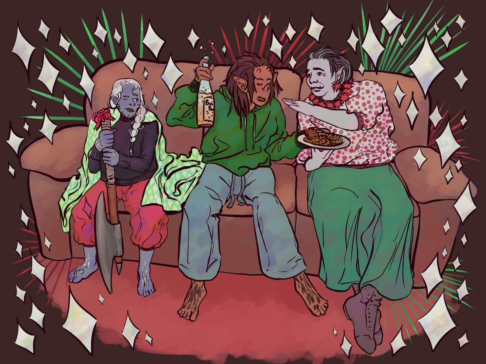
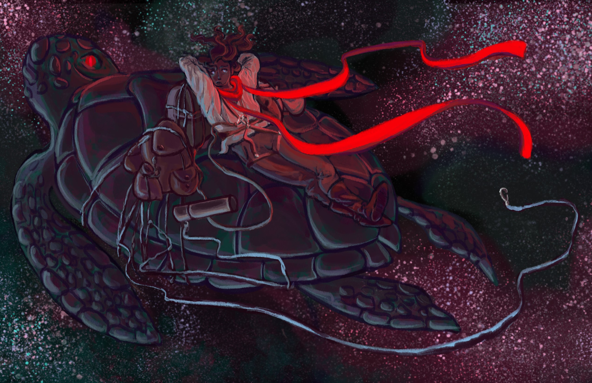
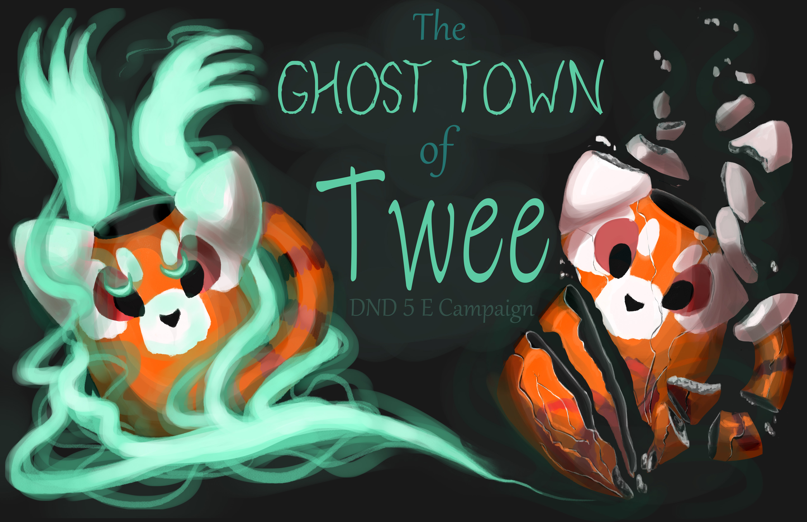
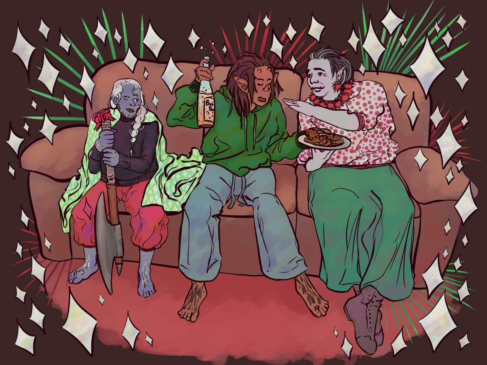

Illustration


 





 


The Little Pink Bracelet Animated Film
solo produced, written, and animated short film



The Little Pink Bracelet Animated Film
solo produced, written, and animated short film